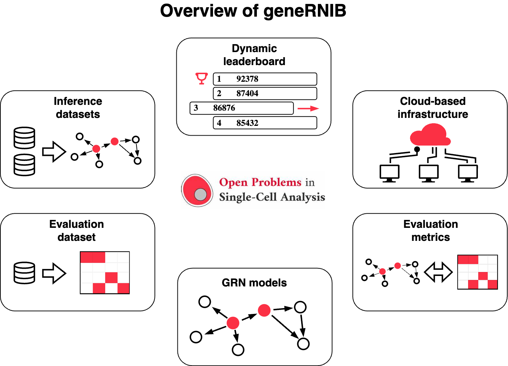

geneRNIB: A living benchmark for gene regulatory network inference
This platform provides curated datasets for GRN inference and evaluation, standardized evaluation protocols and metrics, computational infrastructure, and a dynamically updated leaderboard to track state-of-the-art methods. It runs novel GRNs in the cloud, offers competition scores, and stores them for future comparisons, reflecting new developments over time.
The platform supports the integration of new inference methods, datasets, and protocols. When a new feature is added, previously evaluated GRNs are re-assessed, and the leaderboard is updated accordingly. It is designed for both single-modality and multi-omics GRN inference.
{kind=link}

This documentation is supplementary to:
Our paper on bioRxiv: geneRNIB: a living benchmark for gene regulatory network inference
The GitHub repository on the OpenProblems platform.
Agentic AI assistance
geneRNIB ships with a structured agent instructions file (agentic/AGENT.md) that enables AI coding agents to operate the benchmark autonomously — running GRN inference and evaluation pipelines, adding new inference methods, aggregating and comparing scores, and troubleshooting failures — with minimal human intervention. The file gives agents a complete operational picture of the framework: pipeline flow, execution environment decision guide, data format contracts, config file references, and a systematic troubleshooting protocol. We validated this by running the full inference and evaluation pipeline end-to-end using an AI agent, and by integrating new GRN methods through agent-assisted development.
To connect it to your AI assistant:
Claude Code — add the following line to your project’s
CLAUDE.mdfile (create one at the repo root if it does not exist):@agentic/AGENT.md
GitHub Copilot — copy or symlink
agentic/AGENT.mdinto.github/instructions/AGENT.instructions.md. Copilot will automatically apply it as a custom instruction for the repository.
Getting started
Choose the path that matches your goal:
- I want to evaluate my own GRN method
Download inference datasets → Datasets
Run your method and save the output in the required AnnData format → GRN Inference (see “GRN inference without method integration”)
Score your GRN against the benchmark → GRN evaluation
- I want to run an existing integrated method
Install geneRNIB following the GitHub page
Run inference with Docker (Viash) or locally (conda/Singularity) → GRN Inference
Score the output → GRN evaluation
- I want to add a new method, metric, or dataset to geneRNIB
See Extending
- I want to see how methods compare
See Leaderboard